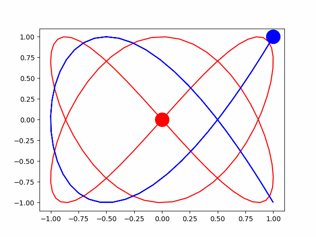

放物線のグラフの関数は、物理の得意な息子君に教わりました。
x = 速度＊時間＊cos(θ)
y = 速度＊時間＊sin(θ)ー(g＊時間＊時間／2）
クラゲは下の式のθを少しずつ変化させて動かしています。
白いクラゲは x = sin(2*θ), y = sin(3*θ) （下のグラフの赤）
青いクラゲは x = cos(2*θ), y = cos(3*θ) （下のグラフの青）

前のページへ
前のページへ戻る